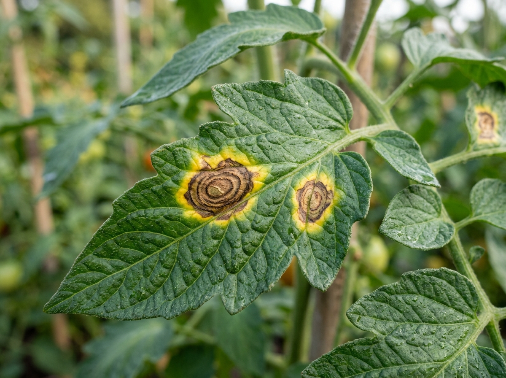
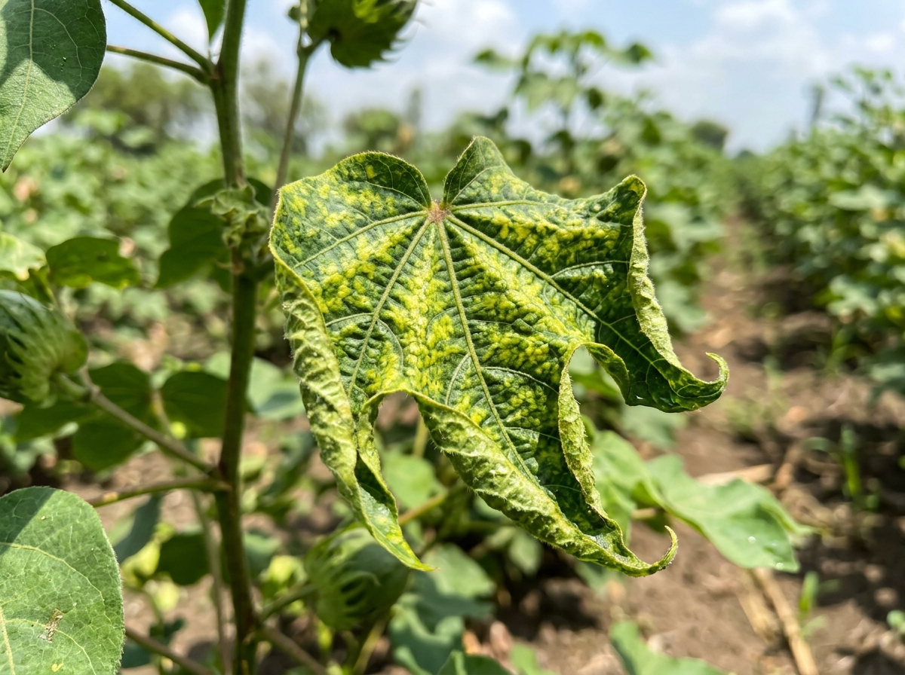
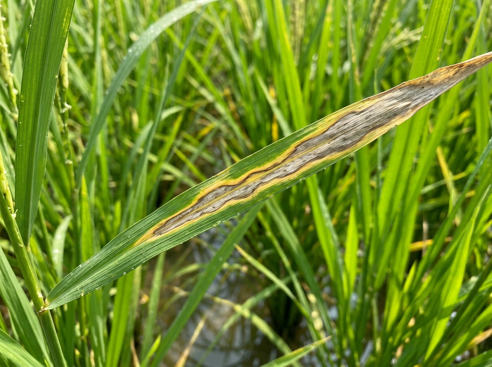
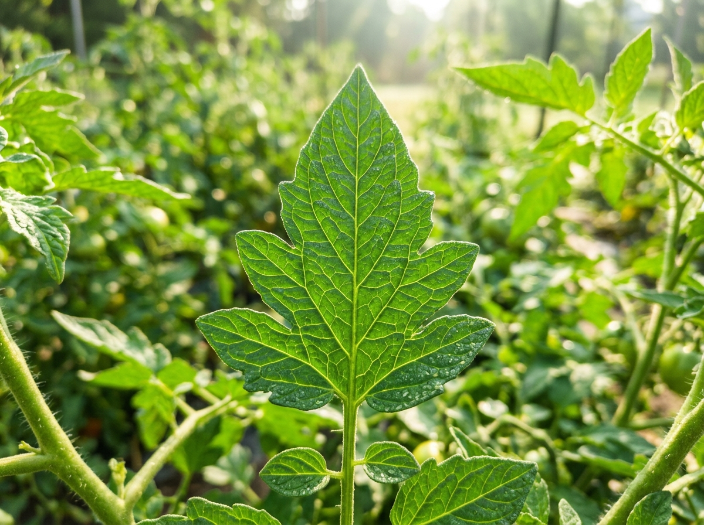

fn_gemini_vision_v31Pruning & Canopy Sanitation
Immediately pluck and incinerate infected lower foliage to reduce spore load. Disinfect pruning shears with 5% sodium hypochlorite.
Biological Bio-Fungicide Application
Spray Trichoderma viride (5g/L water) or 5% Neem Seed Kernel Extract (NSKE) during late afternoon to shield healthy tissue.
Irrigation Adjustment & Spacing
Halt overhead sprayers; switch exclusively to subsurface drip lines. Increase inter-row ventilation to drop canopy humidity below 75%.
crop_analyses:outbreak_alerts4 new cases of Tomato Early Blight verified within 4.2 km radius. High spore dispersal risk detected due to 87% humidity.
Farmer Ramesh synced offline audio scan. Cotton field health index updated to 74/100.
District Officer escalated case #4491. Biological Trichoderma advisory pushed to 142 registered farmers.
Dew point crossed 25°C threshold. Automated preventive alert broadcasted to Paddy cultivators.
Ramesh Kumar
AP-GNT-4029Only Ramesh's authenticated UUID can access or write to these field records. Hotspot queries consume aggregated geo-coordinates with tenant identities masked.
North Tomato Plot (ఉత్తర టమాటా తోట)
East Cotton Acres (తూర్పు పత్తి చేను)
South Paddy Wetlands (వరి మడి)
| Scan ID | Plot Name | Detected Pathogen | Confidence | Severity | Escalated | Date / Time |
|---|---|---|---|---|---|---|
#SCN-8821 |
North Tomato Plot | Tomato Early Blight | 91.4% | Critical | Yes (Dr. Venkat Rao) | Today, 14:32 |
#SCN-8819 |
East Cotton Acres | Cotton Leaf Curl | 78.2% | Moderate | No | Yesterday, 09:15 |
#SCN-8812 |
South Paddy Wetlands | Healthy Rice Canopy | 98.1% | Healthy | No | 3 Oct 2026, 11:40 |
-- AgriPulse AI (Supabase Architecture)
CREATE EXTENSION IF NOT EXISTS postgis;
-- 1. PROFILES (Farmers)
CREATE TABLE public.profiles (
id UUID REFERENCES auth.users ON DELETE CASCADE PRIMARY KEY,
full_name TEXT NOT NULL,
phone_number TEXT UNIQUE,
preferred_language TEXT DEFAULT 'te' CHECK (preferred_language IN ('en', 'te', 'hi')),
created_at TIMESTAMPTZ DEFAULT NOW()
);
-- 2. FIELDS (Farm Plots & PostGIS Geometries)
CREATE TABLE public.fields (
id UUID DEFAULT gen_random_uuid() PRIMARY KEY,
user_id UUID REFERENCES public.profiles(id) ON DELETE CASCADE NOT NULL,
field_name TEXT NOT NULL,
crop_type TEXT NOT NULL,
area_acres NUMERIC(5,2) CHECK (area_acres > 0),
location GEOGRAPHY(POINT, 4326),
health_score INT DEFAULT 100 CHECK (health_score BETWEEN 0 AND 100),
created_at TIMESTAMPTZ DEFAULT NOW()
);
-- 3. CROP ANALYSES (Multi-modal Telemetry)
CREATE TABLE public.crop_analyses (
id UUID DEFAULT gen_random_uuid() PRIMARY KEY,
field_id UUID REFERENCES public.fields(id) ON DELETE CASCADE NOT NULL,
user_id UUID REFERENCES public.profiles(id) ON DELETE CASCADE NOT NULL,
image_url TEXT NOT NULL,
voice_transcript TEXT,
detected_crop TEXT NOT NULL,
possible_disease TEXT NOT NULL,
confidence_score NUMERIC(5,2) NOT NULL,
severity TEXT CHECK (severity IN ('Low', 'Moderate', 'Severe', 'Critical')),
observed_symptoms JSONB NOT NULL DEFAULT '[]'::jsonb,
recommended_actions JSONB NOT NULL DEFAULT '[]'::jsonb,
preventive_measures JSONB NOT NULL DEFAULT '[]'::jsonb,
is_expert_escalated BOOLEAN DEFAULT FALSE,
is_demo_mode BOOLEAN DEFAULT FALSE,
created_at TIMESTAMPTZ DEFAULT NOW()
);Toggle authentication identity to simulate how Postgres RLS policies protect farmer privacy while serving public epidemiologic heatmaps.
Supabase Edge Function: Multi-Modal Gemini Pipeline
// supabase/functions/diagnose-crop/index.ts
Deno.serve(async (req) => {
const { imageUrl, audioBase64, weather } = await req.json();
const prompt = `Analyze this crop leaf alongside weather (${weather.temp}C, ${weather.humidity}% RH). Explain symptoms and prescribe safe organic treatments.`;
const geminiResponse = await geminiVision.generateContent([imageUrl, audioBase64, prompt]);
return new Response(JSON.stringify(geminiResponse));
});| Concept Name | Core Architecture | Differentiator | Feasibility | Wow Factor | Score (/80) |
|---|---|---|---|---|---|
| 1. LeafScan Lite | Mobile Web + CNN Classification | Basic offline image disease identification | 9 / 10 | 4 / 10 | 48 / 80 |
| 2. AgriPulse AI (Selected) | Multi-modal (Vision+Voice) + Supabase Edge + Micro-Climate | Explainable AI + Micro-climate forecasting + Regional voice escalation | 9 / 10 | 10 / 10 | 77 / 80 |
| 3. DroneGaze OS | YOLOv8 + Autonomous Drone Telemetry | Aerial field heatmap analysis | 3 / 10 | 9 / 10 | 52 / 80 |
| 4. BioPest Market | E-Commerce + Diagnostic API | Direct marketplace for organic pesticides | 8 / 10 | 5 / 10 | 55 / 80 |
| 5. FieldChain Ledger | Solana + IPFS + AI Disease Verification | DeFi crop insurance claims triggering | 5 / 10 | 7 / 10 | 54 / 80 |